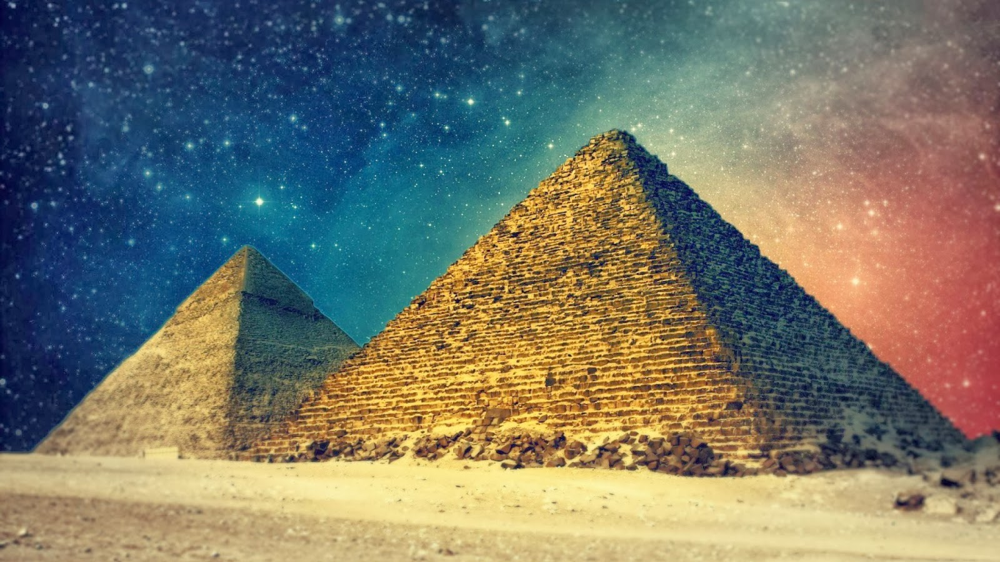

The Pyramids of Egypt
Some of the oldest constructions in the world, even summarising them would take pages upon pages. So we have compiled a list of the most interesting articles on the web and we'll link you to all of them.

Facts about the Egyptian Pyramids
Questions and Answers about the Egyptian Pyramids
National Geographic's Ten Facts about Ancient Egypt
Greatest Collection of Knowledge on the Pyramids